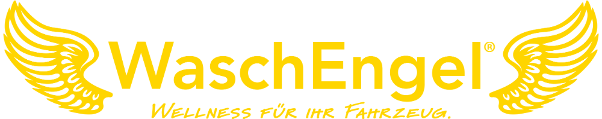
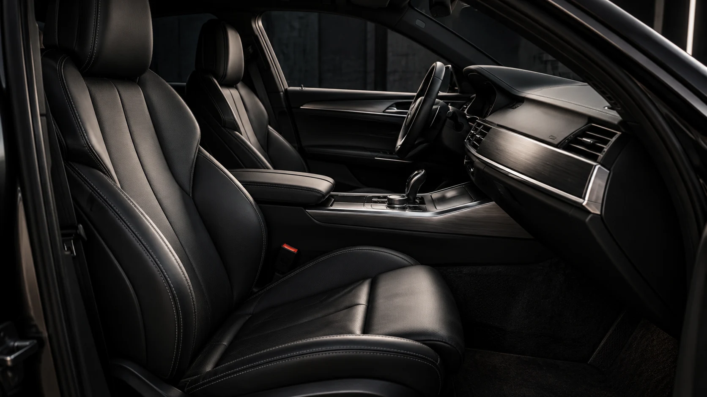
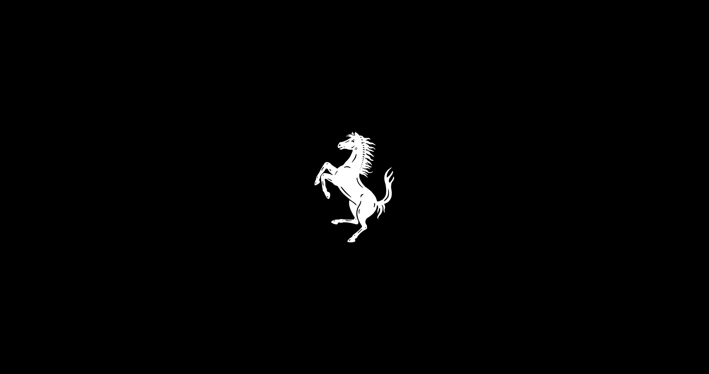
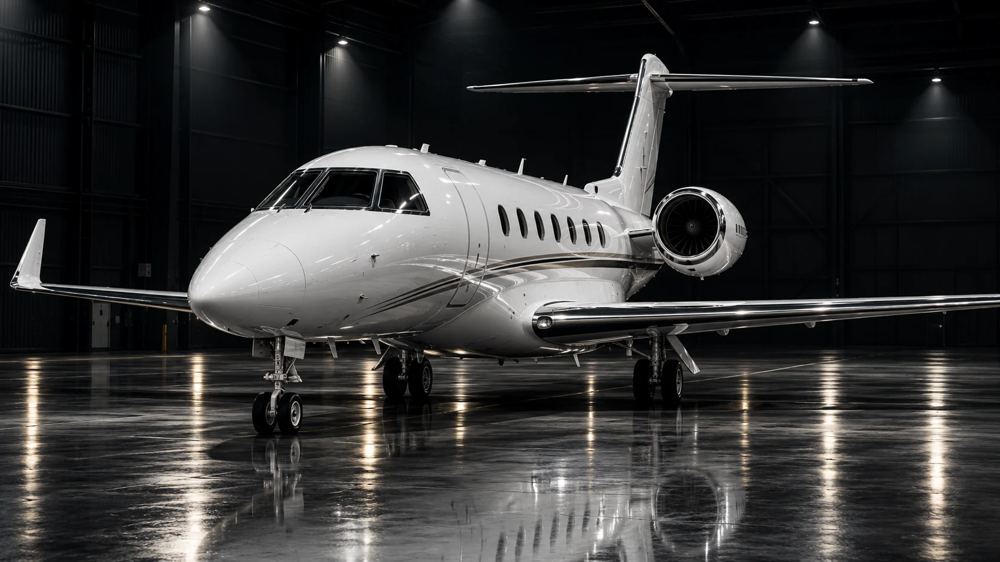
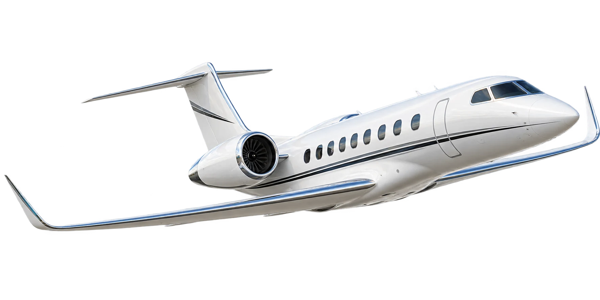

Innenreinigung
Saugen, Wischen und saubere Scheiben. Auf Wunsch auch eine gründliche Reinigung von Polstern, Teppichen und Leder.

Ob Kleinwagen, Familienauto oder Firmenwagen: Bei WaschEngel ist jedes Fahrzeug willkommen. Wir kümmern uns um die Reinigung – sorgfältig, persönlich und passend zu Ihrem Bedarf.
Innenreinigung · Außenpflege · Aufbereitung
Krümel auf dem Rücksitz, Staub im Cockpit oder Schmutz vom letzten Ausflug? Wir sind für Sie da. Vom kleinen Stadtauto bis zum großen Familienwagen – jedes Fahrzeug bekommt bei uns die gleiche Aufmerksamkeit.
Eine schnelle Reinigung oder eine gründliche Aufbereitung? Wir beraten Sie gerne.
Saugen, Wischen und saubere Scheiben. Auf Wunsch auch eine gründliche Reinigung von Polstern, Teppichen und Leder.
Sorgfältige Handwäsche, Felgenreinigung und Lackpflege – damit Ihr Auto wieder sauber und gepflegt aussieht.
Intensive Pflege für innen und außen. Wir stimmen die Behandlung auf den Zustand Ihres Fahrzeugs und Ihre Wünsche ab.
Auch für Firmenwagen und Flotten. Sprechen Sie mit uns über regelmäßige Pflege und individuelle Leistungen.
Der letzte Eindruck zählt.
Die Rückgabe Ihres Leasingfahrzeugs steht an? Wir bereiten Ihr Fahrzeug mit einer individuell abgestimmten Innen- und Außenreinigung sowie Aufbereitung auf den Übergabetermin vor. Gemeinsam besprechen wir den Zustand und die passenden Pflegeleistungen.
Ob Privatleasing oder Firmenwagen: Teilen Sie uns Fahrzeugmodell, Rückgabetermin und Ihre Wünsche mit. Den sinnvollen Leistungsumfang stimmen wir persönlich mit Ihnen ab.
Die Bewertung bei der Rückgabe erfolgt durch den Leasinggeber. Eine Aufbereitung garantiert keine kostenfreie Rückgabe.
Zusammenarbeit mit Marken, bei denen
jedes Detail zählt.




GRENZENLOS.
Von der Straße. In den Himmel.Präzision am Boden.
Perfektion für den nächsten Flug.
Ein eigener Bereich. Derselbe kompromisslose Anspruch. WaschEngel bringt hochwertige Reinigung und Oberflächenpflege in die private Luftfahrt — in Zusammenarbeit mit der FAI Aviation Group.
Professionelle Außenreinigung und sorgfältige Oberflächenpflege. Umfang und Durchführung stimmen wir individuell mit Ihrem Luftfahrt-Team ab.
Innenreinigung, Kabinenaufbereitung und Pflege hochwertiger Oberflächen — für ein gepflegtes Reiseerlebnis bis ins Detail.
Planung der Reinigung am Hangar oder vor Ort auf Anfrage. Einsatzort, Zugang und zeitlichen Ablauf klären wir persönlich.

Jeder Flug beginnt mit Sorgfalt.
WaschEngel Express.
Hochwertige Pflege.
Mitten in Ihrem Alltag.
Das neue WaschEngel Konzept für unkomplizierte Fahrzeugpflege: drei abgestimmte Pflegepakete, von der Innenreinigung bis zur Deluxe-Behandlung.
Äußere Bayreuther Str. 128
90411 Nürnberg
Öffnungszeiten bitte direkt beim Team erfragen.
Federleicht & Engelsschein: ca. 25 Minuten bei normaler Verschmutzung.
Bei starker Verschmutzung berät Sie gerne unser Team.
Polsterreinigung · Lederreinigung · Tierhaare · Geruchsneutralisierung · Kratzer entfernen und vieles mehr.
Welche Behandlung zu Ihrem Fahrzeug passt, klären wir persönlich.
Drei Standorte. Persönliche Beratung.
Nürnberg, Herzogenaurach & Umgebung.
Innenreinigung & Außenpflege
Öffnungszeiten bitte beim Team erfragen
Fahrzeugpflege & Aufbereitung
Besuch nach Terminvereinbarung
Fahrzeugpflege & Aufbereitung
Besuch nach Terminvereinbarung
Öffnungszeiten und Leistungsumfang bitte vor Ihrem Besuch bestätigen.
09131 1239258info@waschengel.deLaut WaschEngel besteht Vollkaskoschutz bei Abholung, Behandlung und Rückgabe. Einzelheiten erläutert Ihnen das Team vor Ihrer Buchung.
Fahrzeugklasse, Zustand und gewünschte Behandlung bestimmen den Preis. Nach persönlicher Beratung erhalten Sie ein individuelles Angebot. Leistungsübersicht ansehen.
Abholung, Leihwagen und WaschEngel-Taxi sind auf Anfrage verfügbar. Verfügbarkeit und Konditionen klären wir mit Ihnen persönlich.
Ja. Fragen Sie nach Sonderreinigung bei Tierhaaren, Gerüchen oder Schimmel sowie nach Kleinreparaturen, Lack-, Leder- und Polsterarbeiten. Auch Leasingrückgaben und gewerbliche Fahrzeuge besprechen wir individuell.
Geben Sie Ihrem Fahrzeug die Aufmerksamkeit, die es verdient.